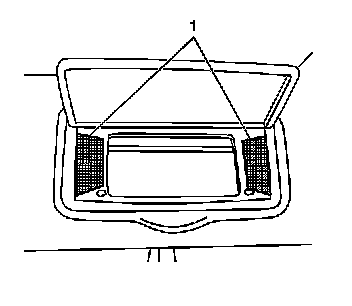
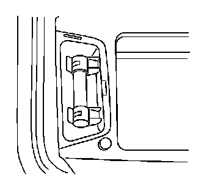

Vanity Lamp: Service and Repair
Vanity Mirror Lamp Replacement
Removal Procedure

1. Pry the vanity mirror lamp lens (1) in order to remove the lens.

2. Remove the bulb.
Installation Procedure
1. Install the bulb.
2. Reinstall the vanity mirror lamp lens (1).